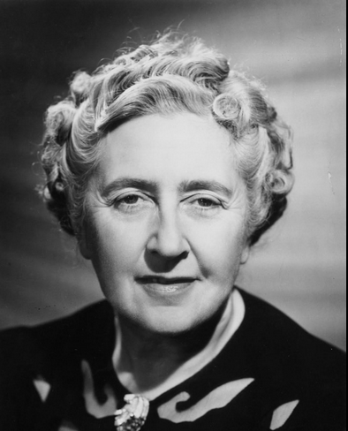
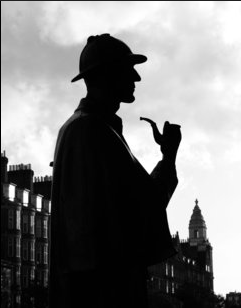
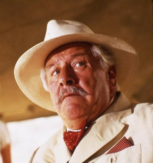

The Creators


Preview...Agatha Christie and Arthur Conan Doyle wrote arguably the two greatest detectives in history. But who were they and what inspired them? Read More
Holmes and Poirot - The Great Literay Detectives

The objective of this blog is information. In reading through the stories of Sherlock Holmes and Hercule Poirot, it's difficult not to compare the two literary detectives. Especially in Agatha Christie's "Murder on the Links", which is the second book in the Hercule Poirot series, where she makes very direct comparisons between Holmes and Poirot, and even introduces a new character by the name of Giraud who is a distinctly Holmes like character, and ends up as Poirot's rival in the novel. So who is the better detective? Unfortunately, that is up to each individual reader. Do I have my own opinion? Yes. Will I voice my opinion? No. My only intent is to provide information and let YOU the reader make your own decision.

Preview...Agatha Christie and Arthur Conan Doyle wrote arguably the two greatest detectives in history. But who were they and what inspired them? Read More

Preview...Sherlock Holmes is arguably the first literary super hero. His gifts of deduction and reasoning allowed him to see through walls, read minds, see the past and even predict the future. Read More

Preview...The retired Belgian Detective Hercule Poirot (pronounce Poy-row) brought a unique style and method to detection using what he called "the little grey cells". Read More
| Title | Year | Novel or Short Stories |
|---|---|---|
| A Study in Scarlet | 1887 | Novel |
| The Sign of the Four | 1890 | Novel |
| The Adventures of Sherlock Holmes | 1892 | 14 Short Stories |
| The Memoirs of Sherlock Holmes | 1887 | 12 Short Stories |
| The Hound of the Baskervilles | 1901-1902 | Novel |
| The Return of Sherlock Holmes | 1905 | 12 Short Stories |
| The Valley of Fear | 1914-1915 | Novel |
| His Last Bow | 1917 | 7 Short Stories |
| The Case-Book of Sherlock Holmes | 1927 | 12 Short Stories |
| Title | Year | Novel or Short Stories |
|---|---|---|
| The Mysterious Affair at Styles | 1920 | Novel |
| TThe Murder on the Links | 1920 | Novel |
| Poirot Investigates | 1924 | Short Story |
| The Murder of Roger Ackroyd | 1926 | Novel |
| The Big Four | 1927 | Novel |
| The Mystery of Blue Train | 1928 | Novel |
| Peril at End House | 1932 | Novel |
| Lord Edgware Dies | 1933 | Novel |
| Murder on the Orient Express | 1934 | 12 Short Stories |
*There are a total of 39 Hercule Poirot Novels but these are all I've read currently.
I am a brain, Watson. The rest of me is a mere appendix. - Sherlock Holmes in The Adventure of the Mazarin Stone.
Every murderer is probably somebody's old friend. You cannot mix up sentiment and reason. - Hercule Poirot in The Mysterious Affair at Styles.